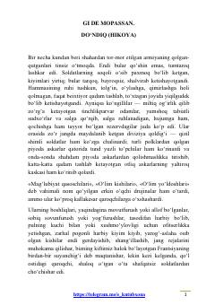

DUrush davridagi fojiali voqealar va insoniy munosabatlarni ochib beruvchi mumtoz hikoya.
Fransuz yozuvchisi Gi de Mopassanning ushbu mashhur hikoyasida Fransiya-Prussiya urushi davridagi voqealar, bosqinchilik va insoniy munosabatlar fojiasi ochib beriladi. Tor-mor etilgan armiya ortidan shaharni egallagan dushmanlar va turli qatlam vakillarining ruhiy holati mahorat bilan tasvirlangan.